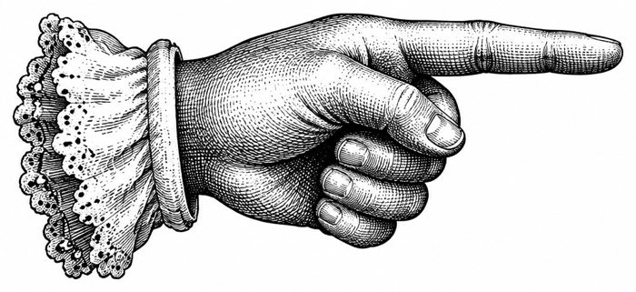

Show the editor's notes
Dispatches cited
Built from a saved snapshot of the news, not live news.
Sunday, October 11, 2026
Morning Edition
Where the news is carrying your coin
Choose a coin, Long or Short, and your timeframe. NewsTide reads the news behind the chart and prints one verdict.
The presses are running. About 60 seconds left.

Dispatches cited
Built from a saved snapshot of the news, not live news.
X (Twitter) is not connected yet; this edition is built from blogs, forums and news feeds.